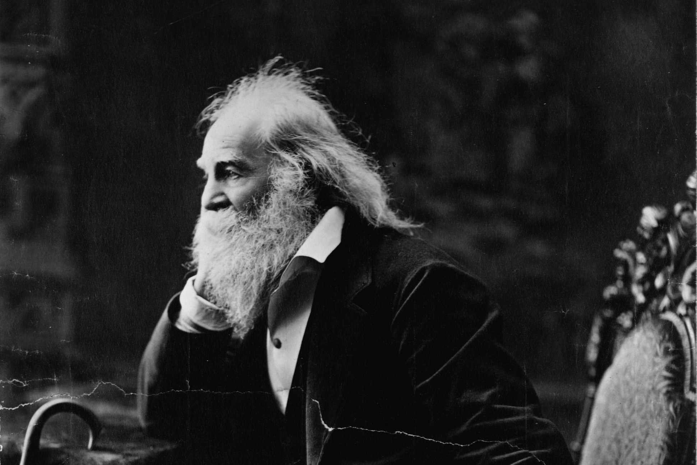

About: “Self"

There are several quotes that makes it apparent that Whitman does not consider the
narrator to represent a single individual. Rather, he seems to be narrating for all:
"I am large, I contain multitudes"
"For every atom belonging to me as good belongs to you"
"In all people I see myself, none more and not one a barleycorn less”
"It is you talking just as much as myself... I act as the tongue of you"